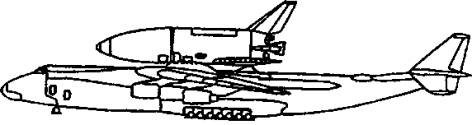
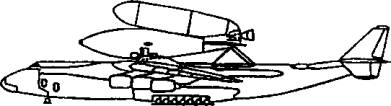
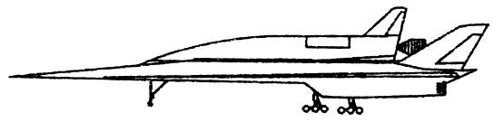
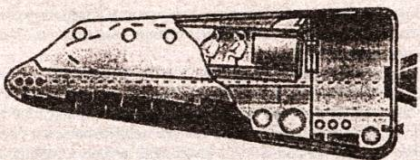
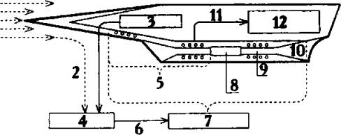
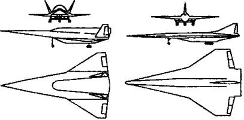
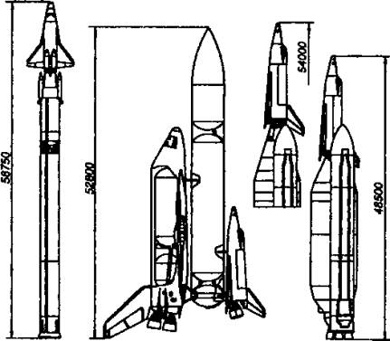
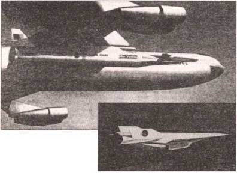

На смену «Шаттлу»
Экспедиция, осуществленная Б. Рутаном и его командой, стала своего рода сенсацией и в США. Небольшая частная компания сумела обставить НАСА по созданию многоразового «челнока» нового поколения, потратив на это сравнительно небольшую сумму. Вот как это было…

Авиационно-космическая система МАКС-Т.

Авиационно-космическая система МАКС-М.
ПОЛЕТ НА ВЫСОТУ В 100 КМ. В октябре 2004 года, уложившись в недельный срок, частный космический корабль «Space Ship One» дважды совершил полет на высоту более 100 км.
Маленький самолет сначала под управлением космонавта-любителя Майкла Невилла, а потом — его коллеги Брайана Бинни поднялся на высоту свыше 100 км и благополучно приземлился на аэродроме в Калифорнии.
Гонка за призом началась еще весной 2003 года. В апреле команда Барта Рутана, который прославился еще в 1986 году, когда построил самолет «Вояджер», на котором его брат Дик Рутан вместе с Джейн Игер совершил беспосадочный полет вокруг земного шара за 9 суток, продемонстрировала свое новое детище. Оно представляло собой транспортную систему, состоящую из самолета-носителя и ракетоплана, способного, по заверению конструктора, доставить людей в космос.
Затем было совершено несколько испытательных полетов, которые показали, что самолет-ракетоносец «Белый рыцарь» и ракетоплан, в принципе, готовы к штурму высоты.
Схема полета такова: высотный самолет «Белый рыцарь» поднимает небольшой ракетоплан на высоту 13 км. Отсюда тот стартует и, преодолев еще 87 км на собственных двигателях, дальше движется по инерции, описывая параболу. При этом его экипаж оказывается в невесомости 3–4 минуты, а затем возвращается на Землю, спланировав на крыльях ракетоплана, которые разворачиваются в рабочее положение на высоте 24 км.
Барт Рутан предложил для этой схемы ряд новшеств. Например, работа двигателя ракетоплана основана на жидкой окиси азота, которая проходит через пустотелый резиновый цилиндр. Жидкость представляет собой мощный окислитель, благодаря которому резина сгорает с повышенной интенсивностью, создавая при этом тягу. Таким образом, система сочетает безопасность ракетного двигателя на жидком топливе (при помощи клапана его можно быстро отключить) с простотой твердотопливного ракетного ускорителя.

Воздушно-космический самолет МиГ-АКС.
Однако раньше на подобной гибридной тяге в космос никто не летал. И были опасения, что при прохождении окиси азота через резиновую оболочку могут образоваться ударные волны, что приведет к потере стабильности. Тем не менее все обошлось…
Имелись и другие трудности. Например, аэродинамику своего корабля Рутан тщательно смоделировал на компьютере, но испытаний в аэродинамической трубе не проводил. Он рассчитывал проверить пригодность проекта сразу в реальном полете, навесив аппарат на «Белого рыцаря». А это — известный риск.
Тем не менее Рутан был уверен в надежности своих технологий, и они его не подвели.
Правда, в первом зачетном полете ракетоплан после отделения от носителя вдруг начал самопроизвольно выполнять восходящие «бочки», и пилоту с трудом удалось справиться с управлением. Но вот второй полет прошел безукоризненно.
Таким образом, команде Рутана, работавшей на деньги одного из основателей фирмы «Майкрософт», Пола Аллена, удалось опередить всех своих конкурентов. А их немало. В космической гонке участвовали свыше двух десятков коллективов из Аргентины, Канады, России, Англии и США. Правда, мало кому удалось продвинуться дальше чертежей или даже голой идеи.
Лишь канадцы смогли провести испытания своей конструкции, состоявшей из ракеты, подвешенной к стратостату — воздушному шару, способному подниматься на высоту около 20 км. Но и они не смогли составить конкуренцию американцам.
Команда Рутана опередила всех.
ПРОГРАММА «RLV». Правда, серьезные исследователи космоса, например, академик Роальд Санеев, относятся к «Шаттлу» Рутана довольно скептически. «Одно дело вывезти туристов в суборбитальный полет, длящийся всего несколько минут, и совсем другое — отправить человека на орбиту, — рассуждает ученый. — Здесь нужны иные мощности и иные затраты, превосходящие нынешние в десятки, а то и в сотни раз.
Тем не менее частная инициатива подстегнет руководителей НАСА и других авиационно-космических организаций, заставит их приложить все усилия к преодолению того застоя, который наблюдается в пилотируемой космонавтике последние десятилетия…»
Одной из таких попыток является программа РЛВ (RLV — сокращение от английского «Reusable Launch Vehicle», «Космический корабль многоразового использования»). Она осуществляется в тесной кооперации НАСА с аэрокосмической промышленностью США.
Поначалу итогом программы должно было стать создание к 2004 году корабля многоразового использования «Вентура Стар» («Venture Star») конструкции фирмы «Локхид-Мартин». Согласно проекту, который оценивается в 5 млрд. долларов, он должен был выводить на околоземную орбиту полезный груз массой 22,5 т.
Однако предварительные испытания показали низкую надежность и этого проекта. Ныне работы по нему заторможены. Вполне возможно, что они будут и вообще прекращены, поскольку у НАСА есть и альтернативные проекты.
«СПАСАТЕЛЬНАЯ ШЛЮПКА» ДЛЯ МКС. Официально это устройство называется: космоплан Х-38. Известен он также под обозначением Х-35 и X–CRV, представляет собой прототип спасательной «шлюпки» для экипажа Международной космической станции (МКС). Он может быть использован и в качестве транспортного корабля, выводимого в космос ракетой-носителем «Ариан-5» («Ariane-5»).
Разработка космической спасательной «шлюпки» началась еще в 70-х годах XX века. Современный вариант основывается на конструкции челнока Х-24А. Главной «изюминкой» нового проекта является использование параплана в качестве тормозящего и посадочного средства.
Первые испытания параплана состоялись в 1996 году, а первые полеты Х-38 на подвеске самолета В-52 начались в феврале 1997 года.
Спасательный космоплан Х-38 не имеет собственных двигателей и представляет собой летательный аппарат с несущим корпусом. Возвращение на Землю будет проходить по той же схеме, как и возвращение «Спейс Шаттла». И только на завершающем этапе будет выпускаться параплан. На Х-38 не будет ручного управления — процедура входа в атмосферу и спуск предполагается полностью автоматизировать.

Двухмодульный воздушно-космический корабль.
Габариты Х-38: длина — 8,7 м, диаметр — 4,4 м, масса — 8163 кг. Количество спасаемых астронавтов — до 6 человек. Система жизнеобеспечения рассчитана на четыре дня. Продолжительность эксплуатации в качестве модуля МКС — 4000 суток.
Испытания демонстрационной модели космоплана Х-38 проводились в Летно-исследовательском центре НАСА имени Драйдена, расположенном на территории базы ВВС «Эдвардс» (штат Калифорния).
В марте 1998 года первую модель постигла неудача: во время самостоятельного полета парашют-крыло был поврежден и Х-38 разбился. После этого было принято решение об укреплении его конструкции. Уже в феврале 1999 года вторая модель, получившая условное обозначение V-132, была готова к испытаниям.
Первый самостоятельный полет второй модели состоялся 6 февраля 1999 года. Х-38 отделился от самолета-носителя В-52 на высоте 6700 м. Несколько минут он находился в свободном полете, после чего над ним раскрылся параплан, и через 12 минут Х-38 приземлился.
Ныне же, пока испытания Х-38 продолжаются, роль «спасательной шлюпки» на Международной космической станции исполняет российский космический корабль «Союз».
НА ВЕРТОЛЕТЕ ИЗ… КОСМОСА? В марте 1999 года американская компания «Ротари Рокет», которую возглавляет известный специалист по аэрокосмической технике Гарри Хадсон, продемонстрировала опытный образец оригинального 135-тонного двухместного космического корабля многоразового использования.
В отличие от «Шаттла» новый корабль, получивший название «Ротон», не имеет узлов, отстреливаемых во время полета. Весьма оригинальна и двигательная установка аппарата. Ее основой служит 7-метровый вращающийся диск, по окружности которого размещено 96 ракетных двигателей с камерами сгорания размерами с… консервную банку каждый!
Компоненты топлива — керосин и жидкий кислород — поступают в них под действием центробежной силы. Поэтому перед взлетом диск с двигателями раскручивается от внешнего привода на стартовой площадке. Вращение диска в полете поддерживается благодаря тому, что каждое из сопел чуть наклонено в одну сторону. Создаваемый таким образом гироскопический момент помогает кораблю устойчиво держаться на курсе.

Концепция высотно-космического самолета «Аякс»: 1 — набегающий поток воздуха; 2 — аэродинамическое тепло; 3 — топливо; 4 — система химической регенерации тепла; 5 — воздухозаборник, управляемый МГД-генератором; 6 — модифицированное топливо; 7 — магнитоплазмохимический двигатель (МПХД); 8 — камера сгорания; 9 — МГД-ускоритель; 10 — сопло; 11 — электрическая энергия; 12 — система управления аэродинамическими характеристиками.

Многоцелевой гиперзвуковой самолет «Нева» (слева). Справа — транспортный самолет «Нева-М1».
Корпус нового аппарата почти целиком изготовлен из композитного материала на основе углеродных волокон и эпоксидных смол. Благодаря этому он получился очень легким и в то же время прочным.
После того как экипаж выполнит полетное задание, он начинает готовиться к спуску. Для этого «Ротон» разворачивают задом наперед. Тяговые двигатели становятся теперь тормозными, и корабль постепенно начинает спускаться с орбиты по пологой спирали. Перед входом в плотные слои атмосферы экипаж раскрывает четыре складывающиеся 7-метровые вертолетные лопасти, расположенные на носу (который стал при спуске кормой). По мере того как нарастает плотность окружающего воздуха, лопасти раскручиваются, тормозя падение аппарата. И он совершает плавный спуск в режиме авторотации (то есть лопасти вращаются свободно, без помощи двигателя).
Впрочем, в будущем Хадсон намерен увеличить длину каждой допасти до 9,5 м и установить на их концах небольшие реактивные двигатели. Таким образом, экипаж аппарата получит возможность не только маневрировать при спуске, но и взлетать. И лишь поднявшись на высоту около 5 км, астронавты запустят основные ракетные двигатели и поднимутся на орбиту.
В середине 2000 года компания «Ротари Рокет» планировала построить еще три «Ротона». Один из них должен был служить тренажером для подготовки экипажей, а два других начали готовить уже к полномасштабным полетам в космос. Хадсон надеялся, что каждый из таких аппаратов сможет совершить до 100 запусков на орбиту без капитального ремонта.
Однако испытания опытного образца «Ротона» все показали недостаточную надежность системы. И ее внедрение в практику было приостановлено. Тем более что очередная катастрофа — на сей раз с «Колумбией» — заставила специалистов НАСА вновь отставить многие планы и заняться очередной модернизацией «челноков».
КАТАСТРОФА «КОЛУМБИИ». Случилось же вот что… Утром 1 февраля 2003 года при входе с орбиты в плотные слои атмосферы «Шаттл» развалился на части, погубив весь экипаж, в составе семи человек. Расследование показало, что причиной катастрофы опять-таки, как и в случае с «Челленджером», послужили твердотопливные ускорители. Только если в первом случае нарушение герметичности уплотнения привело к взрыву уже на старте, то во втором случае оторвавшийся кусок уплотнителя ударил по левому крылу «Колумбии», нарушив его теплоизоляцию. На спуске крыло не выдержало аэродинамического нагрева и прогорело насквозь, приведя к катастрофе.
Причем шансов спастись у экипажа практически не было. Даже если бы повреждение крыла было обнаружено в космосе, у НАСА не было никакой возможности послать к аварийному кораблю спасательную экспедицию. Не мог экипаж и пристыковать свой корабль к МКС, чтобы на борту станции дождаться помощи. «Колумбия» находилась не на той высоте и не на той орбите.
Ныне в качестве альтернативы аэродинамическому спуску конструкторы НАСА предлагают использовать дня торможения при посадке реактивную силу двигателя. Этот принцип, как известно, используется для уменьшения пробега самолета после посадки. Но в отличие от взлета и пробега посадка на реактивных струях — очень сложная задача.
Тем не менее, в последнее время появилась американская программа «О-клиппер», ставящая целью разработку дешевых перспективных космических транспортных систем, которая пытается реализовать единую систему взлета и посадки на реактивных струях. Обоснованием новой программы является то, что она позволит снизить стоимость одного полета для транспортной системы, предназначенной для подъема ракеты-носителя средней грузоподъемности на орбиту, до уровня ниже 10 млн. долларов.

Проектные варианты выведения многоразовых орбитальных «челноков» небольших размеров. Слева направо: ОК-М-«Зенит»; ОК-М1-ММКС; Ок-М2-«Энергия»-М.
Аналогичная разработка имеется и у нас. Ею занимаются сотрудники Исследовательского центра имени М. В. Келдыша под руководством Виталия Семенова.
Однако до ее внедрения в повсеместную практику пока еще очень далеко. «Пройдет не менее 10 лет, прежде чем подобные системы выйдут на стадию летных испытаний», — полагают эксперты.
ФРАНЦУЗСКИЙ «ГЕРМЕС». Видя, что работы над новым поколением «Шаттла» у американцев продвигаются с переменным успехом, европейские конструкторы попытались продвинуть собственные проекты. Так, на конференции Европейского космического агентства, проходившей в Риме в 1985 году, Франция проинформировала партнеров о своем намерении начать создание корабля «Гермес», который должен выводиться в космос ракетой-носителем «Ариан-5». Два года спустя собравшиеся в Гааге представители агентства согласились сделать проект общеевропейским.
«Гермес» представляет собой воздушно-космический самолет с низко расположенным крылом большой стреловидности, выполненный по аэродинамической схеме «бесхвостка». По идее, при старте он должен устанавливаться на носу ракеты-носителя.
Возможность бокового маневра при возвращении корабля на Землю с орбиты должна составить 1500–2000 км. Полная масса орбитального корабля — 21 т, полезная нагрузка — около 3 т.
Однако из-за серии неудачных запусков самого носителя осуществление программы «Гермес» все еще остается под вопросом.
«МУСТАРДЫ» БРИТАНСКИХ ОСТРОВОВ. Попытались было осуществить свою программу создания космического самолета и конструкторы Великобритании. Еще в 1965 году они предложили проект воздушно-космического корабля «Мустард» («Mustard»), предназначенного для вывода полезною груза массой около 3 т на орбиту высотой около 550 км.
«Мустард» состоит из трех пилотируемых ступеней, аналогичных по конструкции и геометрическим размерам. Масса каждой — около 137 т. При этом на орбиту выводится лишь верхняя ступень, а две предыдущие выполняют лишь функции разгонных.
После выполнения своих функций первые ступени должны были возвращаться в район старта подобно самолетам. Аналогично производила бы спуск с орбиты и третья ступень.
Однако осуществление этой программы оказалось очень дорогим, и вскоре оно было приостановлено.
Тогда внимание британцев стал занимать проект XOTOЛ (HOTOL). Работы по нему были начаты в 1982 году по инициативе фирм «Бритиш аэроспейс» и «Роллс-Ройс», которые провели поисковые исследования по одноступенчатым аппаратам с горизонтальными взлетом и посадкой.
Предполагалось, что стартовать ХОТОЛ длиной в 62 м будет либо с разгонной аэродромной тележки, либо с самолета-носителя. Длина взлетной полосы — до 4 км. Эксплуатационный ресурс — 120 полетов. Масса полезной нагрузки — порядка 11 т.
Высокая экономичность ХОТОЛа должна была достигаться за счет его многоразового использования и упрощения предполетной подготовки. Однако специалистам до сих пор так и не удалось создать хотя бы прототип маршевого кислородно-водородного двигателя HOTOL RB454, способного функционировать и как воздушно-реактивный и как ракетный. А потому с конца 80-х годов XX века проект находится в замороженном состоянии.
НАСЛЕДНИКИ ЗЕНГЕРА. Не забывают о своем славном прошлом и немецкие конструкторы. Одной из первых попыток ФРГ вернуться в разряд космических держав был проект одноступенчатого космического корабля многократного использования VETA.
Конструкция корабля базировалась на технике и технологии ракеты «Сатурн-5», созданной под руководством фон Брауна, и отсеков кораблей «Аполлон». Однако, поняв, что американцы вовсе не склонны делиться космическими секретами, немецкие конструкторы отказались от первоначальных намерений и занялись проработкой воздушного старта с помощью самолета-носителя. Так, в 1965 году вниманию публики был представлен проект фирмы «Юнкере» («Junkers»). Космическая система была спроектирована в виде двухступенчатого космического самолета. Планировалось, что он будет стартовать горизонтально с рельсовой катапульты и в момент разделения ступеней достигнет высоты 60 км за 150 секунд. Нижняя ступень, планируя, возвратится на базу, а верхняя выйдет на орбиту высотой 300 км, неся с собой около 2,5 т полезного груза.
Однако и этому проекту не суждено было сбыться из-за трудностей финансово-технического характера.
Тогда в середине 80-х годов XX века исследователи решили вернуться к идее доктора Зенгера, значительно модернизировав ее. Проект «Зенгер» («Sanger») представляет собой двухступенчатую космическую систему с возможностью горизонтального старта с обычных аэродромов.
Применение в маршевых двигателях экологически чистых компонентов топлива — жидких кислорода с водородом — исключает выброс в атмосферу вредных продуктов сгорания.
По идее, первая ступень EHTV массой 259 т представляет собой двухкилевый самолет стреловидной формы. Разгонять его должны пять комбинированных турбопрямоточных воздушно-реактивных двигателей. Дальность полета — 10 000 км. Скорость — 4,5 М (т. е. более чем вчетверо превышает звуковую), высота полета — 25 км. Причем рассматривался вариант создания на базе этой конструкции и гиперзвукового пассажирского самолета, способного доставить 250 пассажиров за три часа из Франкфурта-на-Майне в Токио через Лос-Анджелес.
Вторая ступень, «Хорус» («Horns») — пилотируемый космический аппарат, во многом сходный с «Шаттлом» и «Гермесом». Расчетная продолжительность орбитального полета — одни сутки. Экипаж — два пилота, четыре пассажира и до 3 т груза.
Одновременно с «Хорусом» немецкие конструкторы спроектировали и грузовой аппарат «Каргус» («Cargus») одноразового использования. Он предназначен для выведения на орбиту до 15 т полезного груза.
В настоящее время проведено свыше четырех десятков экспериментальных пусков прототипа системы. Большинство их прошло вполне благополучно. Однако для создания самой системы ни у ФРГ, ни у Европейского космического агентства нет достаточного количества свободных средств.
ЕВРОПЕЙСКИЙ «АНГЕЛ». И все-таки неудачи, преследующие НАСА, заставляют специалистов ЕКА искать новые возможности объединения Европы для создания собственных средств выведения полезных нагрузок на орбиту. В частности, в 2001 году рабочая группа подготовила программу ANGEL («Advanced New Generation European Launcher»). Ее целью является создание демонстратора многоразовой двигательной установки и экспериментального летательного аппарата многоразового использования.
Если все пойдет по плану, то в течение 2005–2009 годов бюджет проекта может составить 700–720 млн евро ежегодно и позволит довести разработку до стадии летных испытаний.
При этом сначала планируется создание практичной многоразовой транспортной космической системы (МТКС) среднего класса, которая позволит снизить стоимость доставки грузов на орбиту в 1,5–2 раза по сравнению с нынешними ценами. Для этого интенсивность эксплуатации МТКС должна составить 20–40 полетов в год с ресурсом в 100 полетов без капитального ремонта и возможностью предполетной подготовки в течение одной недели.
Однако, как пойдут дела на самом деле, покажет будущее.
ЯПОНИЯ РВЕТСЯ В КОСМОС. Первыми о своем выходе на космический рынок заговорили японцы. Авиационно-космические фирмы Страны восходящего солнца приступили к реализации программы научно-исследовательских и опытно-конструкторских работ в области гиперзвуковой техники еще в 1986 году.
Причем японцы размахнулись весьма широко и вели исследования сразу по трем направлениям. В первую очередь они хотели создать беспилотный аэрокосмический самолет «Хоуп» («Норе»), который должна выводить на орбиту ракета-носитель Н-2. Далее, к 2006 году планировалось создание универсального одноступенчатого пилотируемого аэрокосмического самолета с горизонтальными взлетом и посадкой. И, наконец, японцы планировали создание ряда аппаратов для обследования Луны и других планет Солнечной системы.
Начали свою деятельность специалисты Страны восходящего солнца с того, что в 1994 году отправили в космос самую настоящую «летающую тарелку». Правда, официально аппарат назывался ОРЕХ (сокращение от английского названия «Orbital Ре-Entry experiment»). Но по внешнему виду то была действительно «тарелка» — диск диаметром 3,4 м.
Ракета H-II вывела OPEX на орбиту высотой в 450 км. И оттуда «тарелка» стала планировать вниз. Через 2 часа она приводнилась в Тихом океане. В момент прохождения плотных слоев атмосферы диск раскалился до 1570 °C, но тем не менее телеметрическая аппаратура на борту сохранила свою работоспособность.
В 1996 году ракета-носитель J-I вывела в космос следующий аппарат — HYFLEX («Hypersonic Flight Experiment»). Этот аппарат был уже похож на цилиндр с заостренным носом. На высоте 110 км он отделился от носителя и спикировал вниз, развив скорость до 15 м. Затем была раскрыта парашютная система, и аппарат приводнился. Однако в самом конце эксперимента произошла неприятность: несмотря на специальный мешок для обеспечения плавучести, аппарат утонул.
После этого японцы перенесли эксперименты на сушу. И с июля по август того же 1996 года было проведено три эксперимента в рамках проекта «ALFLEX». Новый аппарат уже походил на небольшой самолет с крыльями. Его прицепляли к вертолету, поднимали на высоту в несколько километров и сбрасывали. Автоматическая система управления приводила аппарат на посадочную полосу, где он и приземлялся.
И, наконец, осенью 2002 года была проведена серия экспериментов по программе «HSFD Phase-?». Модель представляла собой уменьшенную копию космического самолета с собственным реактивным двигателем. Он может сам взлетать, следовать по маршруту и садиться в заданном месте.
Вслед за ним взлетел и «HSFD Phase-??». Первая попытка прошла неудачно. Зато вторая оказалась вполне благополучной. В дальнейшем, как полагают, этот самолет будет с помощью стратостата поднят на высоту порядка 30 км и сброшен оттуда для дальнейшей отработки системы автоматической посадки.
Затем, согласно программе, в полет отправится TSTO — аппарат, во многом похожий на наш «Буран», но принципиально беспилотный. То есть в нем вообще не предусмотрена кабина для экипажа.
Все эти эксперименты являются последовательными шагами по осуществлению программы создания настоящего космического «челнока» «НОРЕ-Х». Еще этот аппарат японцы называют «Надежда», подчеркивая тем самым, что именно с ним связывают свои надежды на освоение космического пространства.
Однако на сегодняшний день ни по одному из вышеназванных направлений особыми успехами японские исследователи похвалиться не могут. Их преследует длинная цепь технических неудач, заставляющая конструкторов, по существу, топтаться на месте. Дело дошло уже до тою, что японцы, как сообщало ИТАР-ТАСС, решили позаимствовать для своей ракеты «Джей-2» двигатели советского производства НК-33.
Запуск же собственного пилотируемого многоразового космического корабля отложен аж на 2020 год.
КОСМОНАВТИКА КНР. Тем временем извечные конкуренты японцев — китайцы, воспользовавшись предоставленной им советской технологией, смогли значительно продвинуться вперед.
Правда, особых подробностей тут не расскажешь, поскольку китайская космическая программа, которая называется «Проект 921», окутана покровом строжайшей тайны. Декларируется лишь цель: Китай должен стать третьим государством после России и США, способным запускать человека на орбиту. В планах — создание собственной постоянно работающей орбитальной станции (в проекте МКС Китай не участвует). На высшем уровне обсуждаются полеты пилотируемых и автоматических кораблей на Луну и Марс и даже высадка на Луну. Каждый космический старт — а их было уже почти 50 — сопровождается громогласными пропагандистскими декларациями, хорошо знакомыми нам по прежним временам…

Самолет-носитель В-52 поднимает на 12-километровую высоту прототип самолета «Гипер-Х». Внизу — «Гипер-Х» в самостоятельном полете.
О сотрудничестве Китая с США в космонавтике ничего не известно. Но у России Китай позаимствовал немало. Главными инструкторами в китайском ЦПК работают обучавшиеся в середине 90-х в Звездном городке У Цзе и Ли Цинлун. После подписания 25 апреля 1996 года закрытого соглашения с Россией у нас были приобретены: аппаратура систем сближения и стыковки, средств жизнеобеспечения, управления полетом и даже макет корабля «Союз ТМ». Что касается ракеты «Чан Чжэн» («Великий поход»), которая выводит в космос «Шэнь Чжоу» («Волшебный корабль»), то она во многом подобна советской ракете УР-200, оснащенной четырьмя навесными жидкостными ускорителями.
Первый старт «Шэнь Чжоу» состоялся в ноябре 1999 года. И уже пятый старт намечено провести в пилотируемом режиме. В СССР перед полетом Гагарина было выполнено семь беспилотных пусков, США испытывали системы перед полетом Гленна 21 раз. С другой стороны, «Шэнь Чжоу» находился на орбите значительно дольше, чем первые советские и американские корабли. До своего приземления у Великой Китайской стены «Шэнь Чжоу-3» летал в космосе почти неделю.
Примерно столько же — 162 часа — оставался в космосе и следующий китайский корабль, «Шэнь Чжоу-4», запущенный в ночь на 30 декабря 2002 года с Цзюцюанского космодрома с помощью ракеты-носителя «Великий поход-2Ф». На борту корабля имелись биологические объекты, в частности, семена и образцы 100 видов сельскохозяйственных культур и растений — риса, пшеницы, хлопка, кукурузы, соевых бобов, овощей, фруктов и цветов.
Это был последний испытательный полет, после чего в космос на «Волшебном корабле» полетели уже не манекены, а настоящие космонавты. Точнее — тайконавты. Именно так китайцы намерены называть своих соотечественников, которые должны летать на орбиту.
«Тайкон» — по-китайски «космос». Так что китайцы здесь в какой-то степени копируют российское название. На Западе, как известно, прижилось другое название — астронавты.
Впрочем, как подмечают эксперты, сходство российских и китайских проектов не только в этом. По телевидению был показан короткий ролик, в котором продемонстрировано, как два китайца кувыркаются в невесомости на борту специального самолета-лаборатории, точно так, как это делали наши космонавты.
Впрочем, сам полет первого китайского тайконавта Яна Ливэя, предпринятый в конце 2003 года, отличался от полета Юрия Гагарина. Китаец находился в космосе гораздо дольше, совершив свыше десятка оборотов вокруг Земли.
Предполагается сделать следующий полет уже групповым.
И вообще китайцы, похоже, не собираются ограничиваться полетами лишь вокруг Земли. По имеющимся данным, в будущем китайцы намерены создать свою собственную орбитальную станцию, а потом и отправить людей на Луну Вполне возможно, что при этом они вступят в кооперацию со своими японскими соседями. Ведь в одиночку осилить такие проекты накладно даже для страны с миллиардным населением.
Кроме того, китайские конструкторы намерены создать и свою двухступенчатую космическую систему с горизонтальными стартом и посадкой — проект «921-3».
Китайский аэрокосмический аппарат внешне напоминает немецкий двухступенчатый воздушно-космический самолет «Зенгер», однако отличается от него оригинальной конструкцией смешанной двигательной установки, состоящей из жидкостных ракетных и прямоточных двигателей.
Первая гиперзвуковая разгонная ступень (самолет-разгонщик) будет иметь фюзеляж типа «несущий корпус» (длиной около 85 м и шириной 12 м) и треугольное крыло двойной стреловидности. Двигательная установка разгонщика имеет шесть двигателей с суммарной тягой около 40 т. Стартовая масса — 330 т, посадочная — 79 т.
Вторая ступень представляет собой орбитальный самолет со стартовой массой 132 т, который оснащен четырьмя кислородно-водородными двигателями. Внешне он похож на американский «Спейс Шаттл».
После разделения самолет-носитель возвращается к месту старта, используя только прямоточные двигатели. Орбитальный самолет, используя четыре кислородно-водородных двигателя с тягой по 2,1 т, выходит на эллиптическую орбиту высотой от 100 до 300 км.
Предполагается, что китайский «челнок» сможет выводить на орбиту груз до 6 т весом. Специальный космодром для китайского корабля многоразового использования будет построен в Южно-Китайском море, на острове Хайнань.